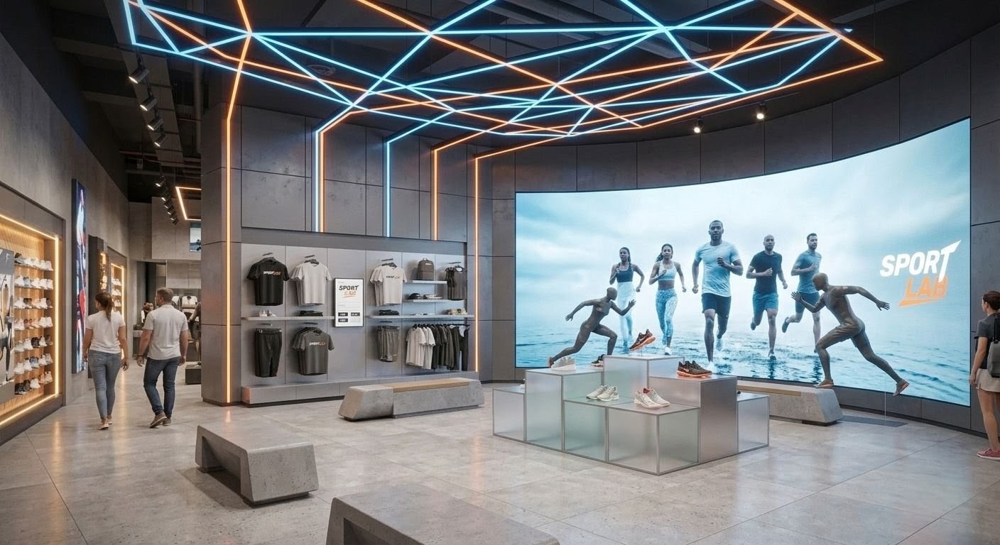
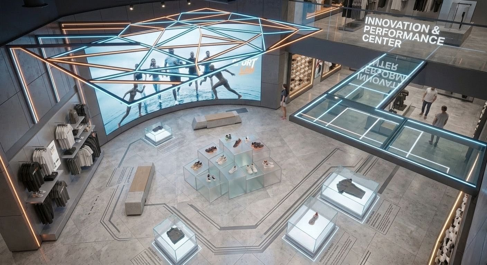

Introducción
Dos tiendas pueden vender exactamente los mismos productos, tener precios similares e incluso ubicarse en la misma plaza comercial. Sin embargo, una de ellas logra atraer más clientes, mantenerlos por más tiempo y convertir más visitas en ventas.
¿Por qué ocurre esto?
Aunque factores como el producto, el servicio o la estrategia comercial influyen directamente en el desempeño de un negocio, el espacio físico también desempeña un papel fundamental.
La manera en que una tienda guía al cliente, organiza sus productos, utiliza la iluminación y construye la experiencia de compra puede modificar la forma en que las personas perciben la marca e interactúan con ella.
Eso es precisamente lo que busca el diseño comercial: convertir el espacio en una herramienta estratégica para el negocio.
¿Qué es el diseño comercial?
El diseño comercial consiste en planificar y desarrollar espacios que respondan tanto a las necesidades operativas del negocio como al comportamiento del consumidor.
No se trata únicamente de crear un lugar atractivo.
Su objetivo es que cada decisión de diseño contribuya a mejorar la experiencia del cliente, fortalecer la identidad de la marca y facilitar el proceso de compra.
En el retail contemporáneo, el espacio físico ha dejado de ser un simple contenedor de productos para convertirse en un punto de contacto estratégico entre las marcas y las personas.
El diseño influye más de lo que imaginamos
Las personas toman miles de decisiones de forma automática cada día.
Cuando entran a una tienda ocurre exactamente lo mismo.
En pocos segundos evalúan aspectos como:
- Si el espacio transmite confianza.
- Si encuentran fácilmente lo que buscan.
- Si la marca parece profesional.
- Si vale la pena permanecer.
- Si desean regresar.
Diversas investigaciones sobre psicología ambiental y comportamiento del consumidor han demostrado que el entorno físico influye en la percepción, el tiempo de permanencia y la experiencia de compra.
Por ello, las decisiones de diseño nunca deberían tomarse únicamente por criterios estéticos.
1. El recorrido: diseñar el camino del cliente
Pocas personas recorren una tienda completamente al azar.
La distribución del espacio, la ubicación del mobiliario y la posición de los productos influyen en el recorrido que realizan los clientes.
Un recorrido bien diseñado permite:
- descubrir más productos;
- reducir zonas desaprovechadas;
- facilitar la orientación;
- aumentar las oportunidades de compra.
En cambio, un recorrido confuso genera frustración y hace que muchas personas abandonen el espacio antes de explorarlo por completo.
Diseñar un recorrido no consiste en obligar al cliente a caminar más, sino en ayudarlo a descubrir mejor.
2. El layout: la estructura que sostiene toda la experiencia
El layout define la organización del espacio comercial.
Es la forma en que se distribuyen:
- productos;
- mobiliario;
- áreas de atención;
- circulación;
- cajas;
- puntos de exhibición.
Un buen layout debe equilibrar tres objetivos:
- facilitar la operación del negocio;
- mejorar la experiencia del cliente;
- favorecer la exhibición estratégica del producto.
Cuando estos elementos trabajan de forma integrada, el espacio resulta más intuitivo y eficiente.
3. La iluminación también comunica
La iluminación no solo permite ver los productos.
También construye atmósferas, dirige la atención y modifica la percepción del espacio.
Una iluminación estratégica puede:
- destacar productos prioritarios;
- crear profundidad;
- generar ambientes más cálidos;
- reforzar el posicionamiento de la marca.
Las marcas de lujo, por ejemplo, utilizan la iluminación para aumentar el valor percibido de sus productos, mientras que los supermercados suelen emplearla para transmitir frescura y facilitar la comparación entre artículos.
Cada tipo de negocio requiere una estrategia distinta.
4. Los puntos focales dirigen la atención
Cuando una persona entra a una tienda, su mirada no recorre todos los productos al mismo tiempo.
El cerebro busca referencias visuales.
Por ello, los puntos focales son fundamentales.
Un punto focal puede ser:
- una exhibición principal;
- un lanzamiento;
- una mesa de novedades;
- un elemento arquitectónico;
- una instalación visual.
Su función es captar la atención y comunicar rápidamente qué quiere destacar la marca.
Sin puntos focales claros, todos los productos compiten entre sí.
Y cuando todo intenta llamar la atención, nada realmente destaca.
5. La permanencia: un indicador que muchas empresas pasan por alto
Uno de los objetivos del diseño comercial consiste en crear espacios donde las personas quieran permanecer.
Esto no significa hacer que el cliente pierda tiempo.
Significa ofrecer una experiencia agradable que favorezca la exploración y reduzca la sensación de prisa.
Factores como:
- comodidad;
- iluminación;
- amplitud;
- música;
- organización;
- circulación;
influyen en el tiempo que una persona permanece dentro del establecimiento.
Y, en muchos formatos de retail, una mayor permanencia suele traducirse en más oportunidades de interacción con los productos.
6. La percepción de marca comienza en el espacio
Antes de evaluar un producto, el cliente ya ha formado una opinión sobre la marca.
La limpieza, los materiales, la organización, la iluminación y el mantenimiento del espacio transmiten mensajes constantes.
Una tienda ordenada comunica profesionalismo.
Una tienda saturada puede transmitir desorganización.
Un espacio coherente fortalece la confianza.
Por eso, el diseño comercial también es branding.
Cada detalle contribuye a construir la percepción de la marca.
7. Conversión: cuando el diseño facilita la compra
Ningún diseño puede garantizar un incremento en las ventas.
Las decisiones de compra dependen de múltiples factores, como el producto, el precio, el servicio y la estrategia comercial.
Sin embargo, un diseño comercial bien ejecutado puede reducir barreras durante el proceso de compra.
Cuando el cliente encuentra fácilmente lo que busca, comprende la exhibición y disfruta del recorrido, la experiencia se vuelve más fluida.
El diseño no vende por sí solo.
Pero puede crear las condiciones necesarias para que la compra ocurra con mayor facilidad.
Errores comunes que limitan el desempeño de una tienda
Muchas empresas invierten en remodelaciones sin analizar cómo funciona realmente su espacio.
Algunos de los errores más frecuentes son:
- Saturar la exhibición con demasiados productos.
- Diseñar únicamente con criterios estéticos.
- Descuidar la circulación.
- No establecer jerarquías visuales.
- Utilizar una iluminación uniforme para todo el espacio.
- Ignorar el comportamiento del consumidor.
- No actualizar el diseño conforme evolucionan las necesidades del negocio.
El diseño comercial es una inversión, no un gasto
Las mejores tiendas no son necesariamente las más grandes ni las más costosas.
Son aquellas donde cada elemento cumple una función.
Cada metro cuadrado representa una oportunidad para comunicar, orientar, exhibir y fortalecer la relación entre la marca y sus clientes.
Cuando el diseño responde a una estrategia comercial, el espacio deja de ser un escenario y se convierte en una herramienta para generar valor.
Conclusión
Las tiendas que destacan no lo hacen únicamente por los productos que ofrecen.
Lo consiguen porque cada decisión de diseño está pensada para facilitar la compra, mejorar la experiencia del cliente y fortalecer la identidad de la marca.
El recorrido, el layout, la iluminación, los puntos focales y la exhibición de producto no son elementos aislados. Juntos construyen un espacio que comunica, conecta y acompaña al cliente durante todo su proceso de compra.
El diseño comercial no es decoración. Es una estrategia de negocio.

